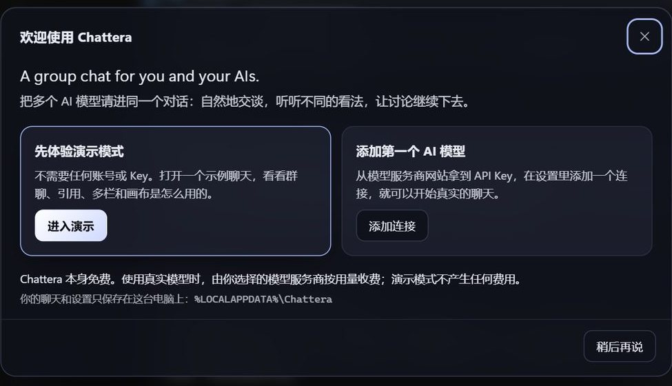
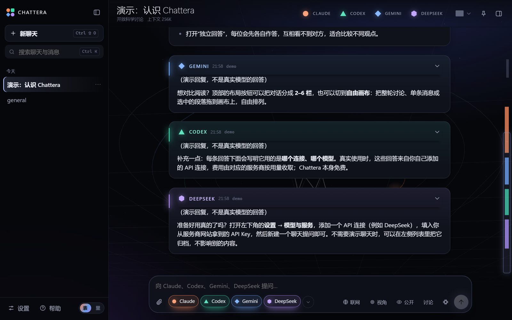
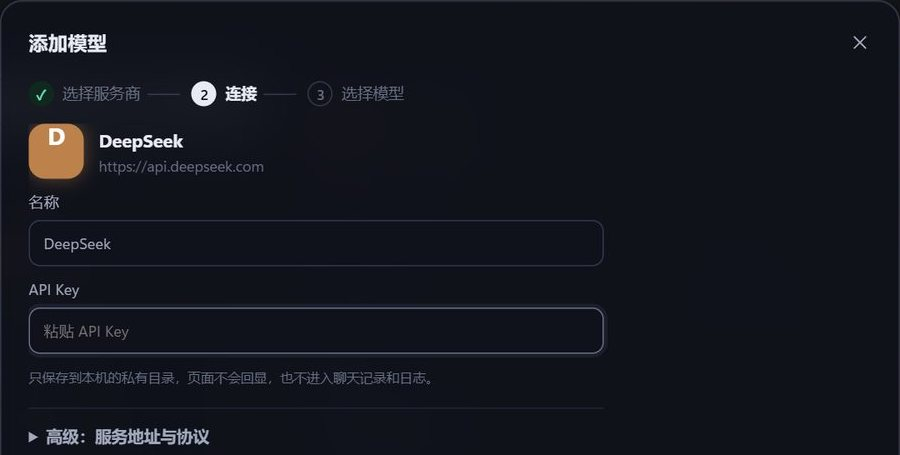

在下载好的 Chattera-Windows-x64.zip 上点右键 → 全部解压缩… → 解压
（不要在压缩包里直接双击运行）。打开解压出来的文件夹，你会看到：
Chattera.exe先出现一个小的启动窗口，第一次大约十几秒，之后自动打开 Chattera 的窗口。
第一次打开会看到欢迎页。先点左边的 进入演示：不需要账号或 Key，也不花钱。

在窗口下方的输入框里输入问题，按 Enter 发送。几位 AI 会各自回答 （演示里的回答是预先写好的示例，会标明“演示回复”）。

API Key 是 AI 服务商发给你的“通行密码”。在服务商网站注册、充值，在“API Keys”页面创建一个并复制
（例如 DeepSeek 开放平台 platform.deepseek.com）。然后：

关掉窗口不会退出。要完全退出：在屏幕右下角通知区域的 Chattera 图标上点右键 → 退出 Chattera，
或在 Chattera 里点 帮助 → 退出 Chattera。下次再双击 Chattera.exe 即可。
多栏阅读、自由画布、联网检索、资料库、数据备份和常见问题，见《02_Chattera完整使用指南.pdf》，也可以在 Chattera 左下角的“帮助”里打开。